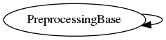

Master index
Index for +eegtoolkit/+preprocessing/@PreprocessingBase
Dependency Graph for +eegtoolkit/+preprocessing/@PreprocessingBase

Generated on Fri 25-Nov-2016 17:12:21 by
m2html
© 2005
 Master index
Master index Master index
Master index